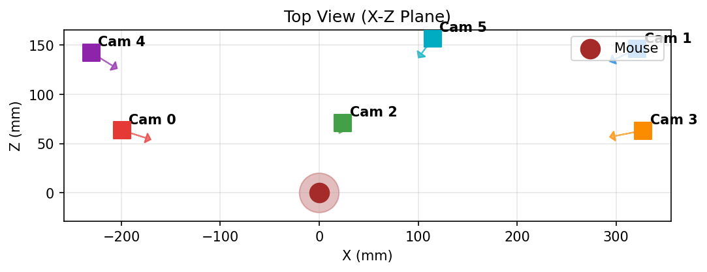
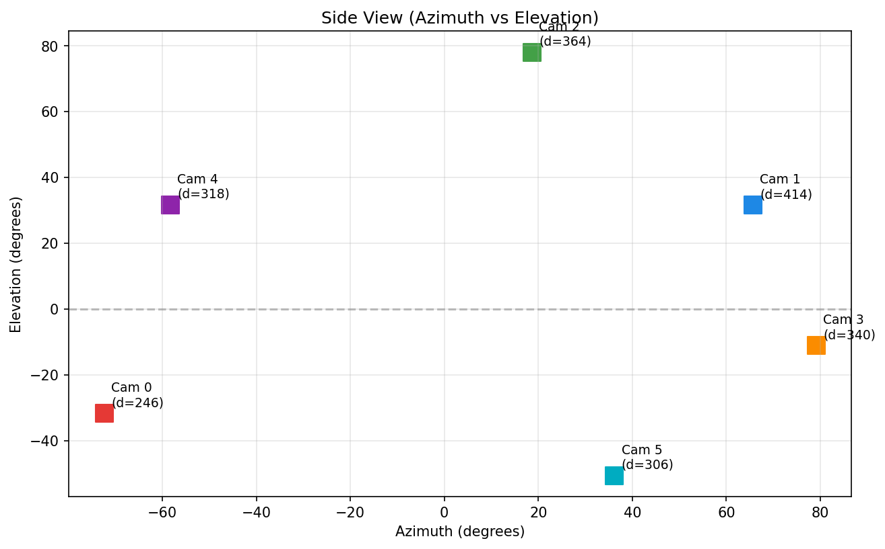
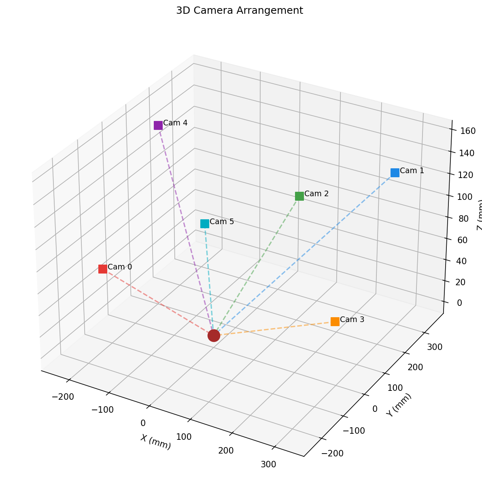
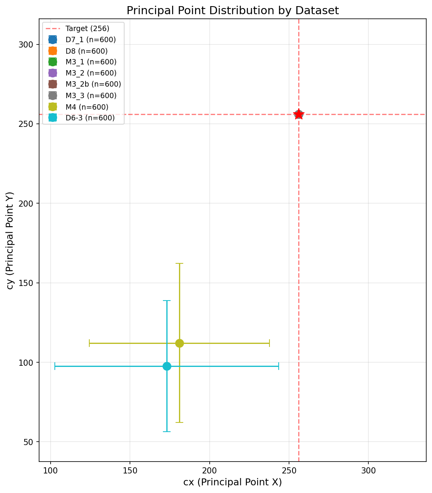
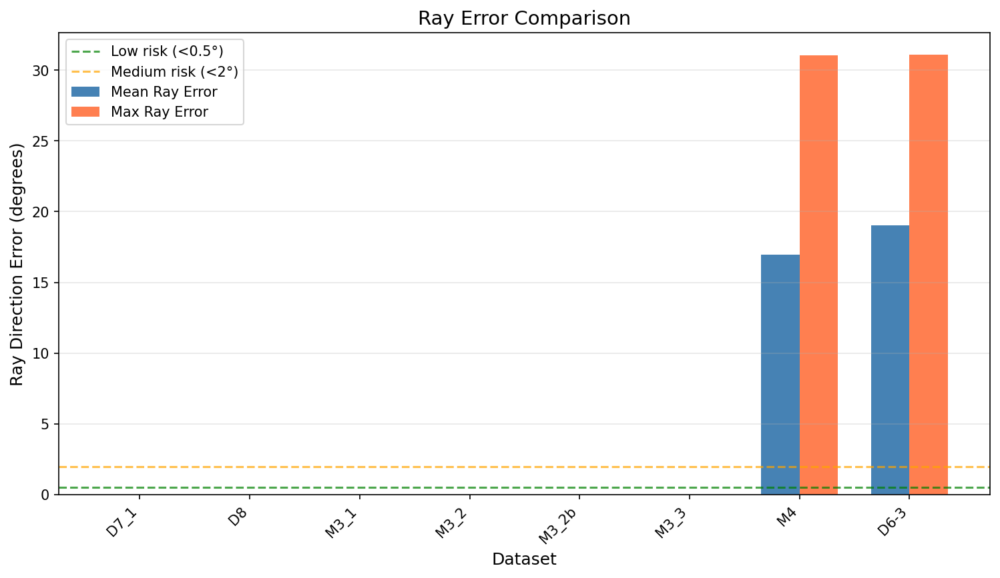

Generated: 2026-01-27 01:13 | Version: Unified v1.0 | Data: markerless_mouse_1_nerf (DANNCE)
| Cam | Color | fx | fy | cx | cy | Azimuth | Elevation | Distance (mm) |
|---|---|---|---|---|---|---|---|---|
| Cam 0 | 1632.31 | 1639.30 | 601.3 | 491.2 | -72.4 | -31.7 | 246.0576 | |
| Cam 1 | 1556.76 | 1580.46 | 622.0 | 417.5 | 65.6 | 31.5 | 414.4543 | |
| Cam 2 | 1630.33 | 1632.95 | 611.4 | 477.6 | 18.7 | 78.1 | 363.6586 | |
| Cam 3 | 1606.17 | 1617.57 | 582.6 | 551.9 | 79.1 | -11.1 | 340.0166 | |
| Cam 4 | 1618.31 | 1628.90 | 641.5 | 453.2 | -58.3 | 31.7 | 318.3025 | |
| Cam 5 | 1636.89 | 1642.46 | 613.3 | 524.3 | 36.2 | -50.6 | 305.7105 |
Opposing pairs: 4-3, 2-5, 1-0

Top View (X-Z Plane)

Side View (Azimuth vs Elevation)

Step 1: World → Camera (Extrinsic)
\[ \mathbf{P}_c = \mathbf{R} \cdot \mathbf{P}_w + \mathbf{T} \]Step 2: Camera → Normalized (Perspective Division)
\[ x = X_c / Z_c, \quad y = Y_c / Z_c \]Step 3: Normalized → Pixel (Intrinsic)
\[ u = f_x \cdot x + c_x, \quad v = f_y \cdot y + c_y \]Combined (Full Projection):
\[ \begin{bmatrix} u \\ v \\ 1 \end{bmatrix} \sim \underbrace{\begin{bmatrix} f_x & s & c_x \\ 0 & f_y & c_y \\ 0 & 0 & 1 \end{bmatrix}}_{\mathbf{K}} \cdot \underbrace{\begin{bmatrix} R & T \end{bmatrix}}_{[R|T]} \cdot \begin{bmatrix} X_w \\ Y_w \\ Z_w \\ 1 \end{bmatrix} \]Note: s is skew parameter (usually 0). D8+ methods correct for non-zero skew.
For Novel View Synthesis, ray direction from pixel (u, v) in camera coordinates:
\[ \mathbf{d}_c = \mathbf{K}^{-1} \cdot \begin{bmatrix} u \\ v \\ 1 \end{bmatrix} = \begin{bmatrix} (u - c_x) / f_x \\ (v - c_y) / f_y \\ 1 \end{bmatrix} \]When PP deviates from (256, 256), ray direction error at center pixel:
\[ \theta_{\text{error}} = \arctan\left(\sqrt{\left(\frac{256 - c_x}{f_x}\right)^2 + \left(\frac{256 - c_y}{f_y}\right)^2}\right) \]Risk Levels:
Example Calculations:
| PP Offset | Ray Error | Risk | Example Dataset |
|---|---|---|---|
| 0 px | 0.00° | LOW | M3_1, M3_2, D7.1, D8 |
| 37 px | ~3.9° | HIGH | D4 (forced PP=256) |
| 119 px | ~12° | HIGH | M3_norm (object-centered) |
| Mode | Crop Center | PP Result | Ray Error | Status |
|---|---|---|---|---|
"image" |
Image center (256, 256) | PP = 256 (fixed) | 0° | ✅ MVG-Correct |
"object" |
Object centroid (varies) | PP varies per view/sample | 11-17° | ❌ Ghosting |
Mathematical Explanation:
Affine Transform (D7.x / M1):
\[ \begin{bmatrix} u' \\ v' \end{bmatrix} = \begin{bmatrix} s_x & 0 \\ 0 & s_y \end{bmatrix} \begin{bmatrix} u \\ v \end{bmatrix} + \begin{bmatrix} \Delta_x \\ \Delta_y \end{bmatrix} \]Preserves parallelism. Ignores camera skew. ~0.9px edge error.
Homography Transform (D8.x / M2 / M3.x):
\[ \mathbf{H} = \mathbf{K}_{\text{target}} \cdot \mathbf{K}_{\text{orig}}^{-1} \]where:
\[ \mathbf{K}_{\text{target}} = \begin{bmatrix} 548.99 & 0 & 256 \\ 0 & 548.99 & 256 \\ 0 & 0 & 1 \end{bmatrix} \]Full perspective correction including skew. 0px geometric error.
| Aspect | Affine (M1/D7.1) | Homography (M2+/D8+) |
|---|---|---|
| Skew Correction | ❌ Ignored | ✅ Corrected |
| Edge Error | ~0.9px | ~0px |
| Computation | Faster | Slightly slower |
| Use Case | Baseline | Production |
| Rank | Dataset | Alias | PP | fx | Zoom | Coverage | Clipping | Status |
|---|---|---|---|---|---|---|---|---|
| ⭐1 | M3_2 | - | 256 | 549 | Per-sample | ~5% | 6.5% | Recommended |
| 2 | M3_1 | - | 256 | 549 | Global | ~4.5% | 0% | Safe |
| 3 | D7.1 | M1 | 256 | 549 | None | ~3% | 0% | Baseline (Affine) |
| 4 | D8 | M2 | 256 | 549 | None | ~3% | 0% | Baseline (Homography) |
| Dataset | Transform | Zoom | zoom_center_mode | PP | Ray Error | Coverage | Status |
|---|---|---|---|---|---|---|---|
| M1 (D7.1) | Affine | None | N/A | 256 | 0° | ~3% | Baseline |
| M2 (D8) | Homography | None | N/A | 256 | 0° | ~3% | Baseline |
| M3 (D10.3) | Homography | Global | object | 256 | ~8° | ~5% | ⛔ fx bug |
| M3_1 | Homography | Global | image | 256 | 0° | ~4.5% | ✅ Safe |
| M3_2 | Homography | Per-sample | image | 256 | 0° | ~5% | ⭐ Recommended |
| M3_2b | Homography | Per-sample (low) | image | 256 | 0° | ~4% | 🔬 H2 baseline |
| M3_3 | Homography | Per-sample + safe | image | 256 | 0° | ~5% | 🔬 H2 test |
| M4 | Homography | Per-sample | object | Variable | ~12° | ~6% | 🔬 H1 test |
✅ Success: zoom_center_mode = "image" → PP = 256 fixed → Ray Error = 0°
❌ Failure: zoom_center_mode = "object" → PP varies → Ray Error = 11-17°
| Aspect | M1 (D7.1) | M2 (D8) | Winner |
|---|---|---|---|
| Transform | Affine | Homography | - |
| Skew Correction | ❌ Ignored (~0.9px edge error) | ✅ Corrected (0px error) | M2 |
| fx Precision | 549.0 | 548.9937744140625 | M2 |
| PP | 256 | 256 | Tie |
| Interpolation | LINEAR | LANCZOS4 | M2 |
| PSNR (Observed) | ~20.3 | ~21.0 | M2 (+0.7) |
| Computation | Faster | Slightly slower | M1 |
Recommendation: Use M2 (D8) for production, M1 (D7.1) for quick experiments.
| Dataset | zoom_center_mode | PP | PP Correction | Expected |
|---|---|---|---|---|
| M4 | object |
Variable → Corrected | ✅ Applied | Test if max coverage achievable with PP fix |
Rationale: Object-centered zoom maximizes coverage but breaks PP=256. M4 tests if explicit PP correction can recover geometry while keeping max coverage.
| Dataset | zoom_range | Safe Mode | Expected Clipping |
|---|---|---|---|
| M3_2b (baseline) | [1.0, 1.5] | ❌ | ~0% |
| M3_3 (test) | [1.0, 2.5] | ✅ | 0% (guaranteed) |
Rationale: M3_2 has 6.5% clipping. Compare conservative zoom (M3_2b) vs safe zoom algorithm (M3_3) to find optimal balance.
cd /home/joon/dev/FaceLift
# M1 (D7.1) - Affine baseline
python -m mouse_extensions.preprocessing.preprocess \
--preset D7.1 --input-dir /path/to/raw --output-dir /path/to/D7_1
# M2 (D8) - Homography baseline
python -m mouse_extensions.preprocessing.preprocess \
--preset D8 --input-dir /path/to/raw --output-dir /path/to/D8
# M3_1 - Global zoom (Safe)
python -m mouse_extensions.preprocessing.preprocess \
--preset M3_1 --input-dir /path/to/raw --output-dir /path/to/M3_1
# M3_2 - Per-sample zoom (Recommended)
python -m mouse_extensions.preprocessing.preprocess \
--preset M3_2 --input-dir /path/to/raw --output-dir /path/to/M3_2
| Dataset | cx (mean±std) | cy (mean±std) | PP Deviation | fx (mean) | Mean Ray Error | Max Ray Error | Samples | Status |
|---|---|---|---|---|---|---|---|---|
| D7_1 | 256.0 ± 0.0 | 256.0 ± 0.0 | 0.0 | 549.0 | 0.00° | 0.00° | 600 | ✅ Good |
| D8 | 256.0 ± 0.0 | 256.0 ± 0.0 | 0.0 | 549.0 | 0.00° | 0.00° | 600 | ✅ Good |
| M3_1 | 256.0 ± 0.0 | 256.0 ± 0.0 | 0.0 | 549.0 | 0.00° | 0.00° | 600 | ✅ Good |
| M3_2 | 256.0 ± 0.0 | 256.0 ± 0.0 | 0.0 | 549.0 | 0.00° | 0.00° | 600 | ✅ Good |
| M3_2b | 256.0 ± 0.0 | 256.0 ± 0.0 | 0.0 | 549.0 | 0.00° | 0.00° | 600 | ✅ Good |
| M3_3 | 256.0 ± 0.0 | 256.0 ± 0.0 | 0.0 | 549.0 | 0.00° | 0.00° | 600 | ✅ Good |
| M4 | 181.0 ± 56.6 | 112.1 ± 50.1 | 162.2 | 549.0 | 16.97° | 31.02° | 600 | ❌ Error |
| D6-3 | 173.1 ± 70.4 | 97.6 ± 41.1 | 178.8 | 549.0 | 19.05° | 31.09° | 600 | ❌ Error |
PP Deviation = √((cx-256)² + (cy-256)²). Target: PP=256, fx=549, Ray Error=0°

Each point shows dataset mean PP with ±1 std error bars. Red star = Target (256, 256).

Green line: Low risk (<0.5°). Orange line: Medium risk threshold (2°).
GS-LRM/FaceLift was trained on Objaverse synthetic data with:
| Property | Mouse (Original) | Mouse (Preprocessed) | FaceLift (Objaverse) |
|---|---|---|---|
| Image Size | 1152 × 1024 | 512 × 512 | 512 × 512 |
| Focal Length | 1557-1637 | 549 | 549 |
| PP (cx, cy) | (583-642, 418-552) | (256, 256) for M3_2 | (256, 256) |
| Camera Distance | 246-415 mm | 2.7 (normalized) | ~2.7 |
| Elevation | ~10-30° (varies) | ~10-30° | -10° to 40° (varied) |
| Number of Views | 6 fixed | 4 input / 6 total | 1-8 input |